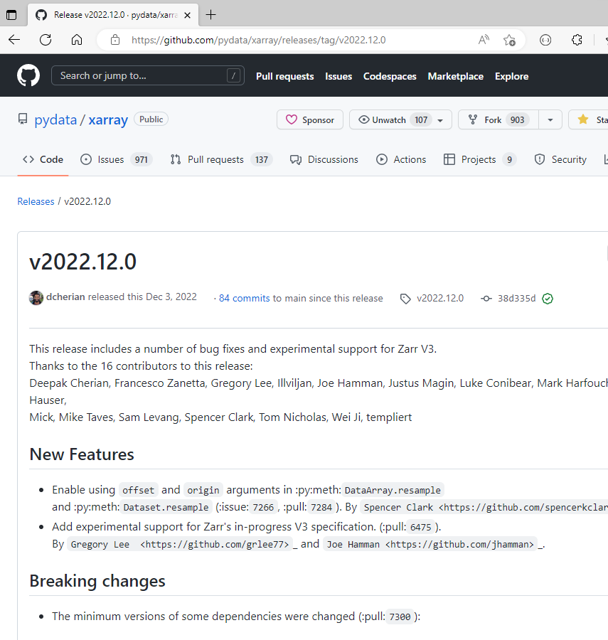

Dependencies and Continuous Integration
Application
A program that is run by a user
- command line tool
- script
- web application
Pin versions to ensure reproducibility, e.g. numpy==1.11.0
Library
A program that is used by another program
- Python package
- Low level library (C, Fortran, Rust, …)
Make the requirements as loose as possible, e.g. numpy>=1.11.0
Make the requirements loose, to avoid conflicts with other packages.
Dependency management
Example of pinning versions:
requirements.txt
numpy==1.11.0
scipy==0.17.0
matplotlib==1.5.1. . .
Or using a range of versions:
requirements.txt
numpy>=1.11.0
scipy>=0.17.0
matplotlib>=1.5.1,<=2.0.0. . .
Install dependencies:
$ pip install -r requirements.txtA common way to declare dependencies is to use a requirements.txt file.
Creating an installable package

setup.py vs pyproject.toml
setup.py
- Traditional approach to defining package configuration and dependencies.
- Defines metadata, dependencies, and entry points in a Python script.
- Uses
setuptoolsto generate packages and install the package.
. . .
pyproject.toml
- Modern approach to defining package configuration and dependencies.
- Defines metadata, dependencies, build tools, and packaging config in a TOML file.
- Uses
poetryorhatchlingto generate packages and install the package.
Install with optional dependencies
pyproject.toml
[project.optional-dependencies]
dev = ["pytest",
"ruff",
"sphinx",
"sphinx-rtd-theme",
"myst-parser",
]
test = ["pytest", "pytest-cov"]
$ pip install mini[test]Creating an installable package
Install package in editable mode:
$ pip install -e .. . .
Start a Python session:
>>> import mini
>>> mini.foo()
42. . .
Run tests:
$ pytest
...
tests/test_foo.py . [100%]
=============== 1 passed in 0.01s ===============Virtual environments
- Creates a clean environment for each project
- Allows different versions of a package to coexist on your machine
- Can be used to create a reproducible environment for a project
- To achieve complete isolation, use Docker containers (not covered in this course)
Virtual environments
$ which python
/usr/bin/python
$ python -m venv venv
$ source venv/bin/activate # for üêß or venv\Scripts\activate.bat ü™ü
(venv)$ which python
/home/user/src/myproj/venv/bin/python
(venv)$ pip install -r requirements.txt- Back in the days, when disk space was limited, it was a good idea to have a separate environment for each project.
- Today, disk space is cheap, and it is a good idea to have a separate environment for each project.
Conda/mamba environments
Conda/mamba is a package manager that can be used to create virtual environments.
$ where python
C:\Users\JAN\AppData\Local\miniforge3\python.exe
$ conda create -n myproj -f requirements.txt
$ conda activate myproj
(myproj)$ where python
C:\Users\JAN\AppData\Local\miniforge3\envs\myproj\python.exeContinuous Integration
Running tests on every commit in a well defined environment ensures that the code is working as expected.
It solves the “it works on my machine” problem.
Executing code on a remote server is a good way to ensure that the code is working as expected.
There are many CI services available, e.g.:
- GitHub Actions
- Azure Pipelines
- Travis CI
- Circle CI
GitHub Actions was forked from Azure Pipelines and runs on the same type of infrastructure, thus are very similar technologies.
GitHub Actions
- Workflow are stored in the
.github/workflowsfolder. - Workflow is described in a YAML file.
- YAML is whitespace sensitive (like Python).
- YAML can contain lists, dictionaries and strings, and can be nested.
$ tree mikeio/.github/
mikeio/.github/
└── workflows
├── docs.yml
├── downstream_test.yml
├── full_test.yml
├── notebooks_test.yml
├── perf_test.yml
├── python-publish.yml
└── quick_test.ymlname: Quick test
on: # when to run the workflow
push:
branches: [ main]
pull_request:
branches: [ main ]
jobs: # what to run
build:
runs-on: ubuntu-latest # on what operating system
steps:
- uses: actions/checkout@v3
- name: Set up Python
uses: actions/setup-python@v4
with:
python-version: 3.9
- name: Install dependencies
run: |
python -m pip install --upgrade pip
- name: Install mikeio
run: |
pip install .[test]
- name: Test with pytest
run: |
pytestüôÇüöÄ
☹️
Benefits of CI
- Run tests on every commit
- Test on different operating systems
- Test on different Python versions
- Create API documentation (next week)
- Publish package to PyPI or similar package repository (two weeks from now)
Triggers
pushandpull_requestare the most common triggersschedulecan be used to run the workflow on a scheduleworkflow_dispatchcan be used to trigger the workflow manually
Jobs
- Operating system
- Python version
- …
...
jobs:
build:
runs-on: ${{ matrix.os }}
strategy:
matrix:
os: [ubuntu-latest, windows-latest]
python-version: [3.8, 3.9, "3.10","3.11"]
...GitHub Releases
GitHub releases are a way to publish software releases.
You can upload files, write release notes and tag the release.
As a minimum, the release will contain the source code at the time of the release.
Creating a release can trigger other workflows, e.g. publishing a package to PyPI.

Summary
- Application vs library
- Prefer
pyproject.tomloversetup.py - Use a separate virtual environment for each project
- Use GitHub Actions to run tests on every commit
- Use GitHub Releases to publish software releases